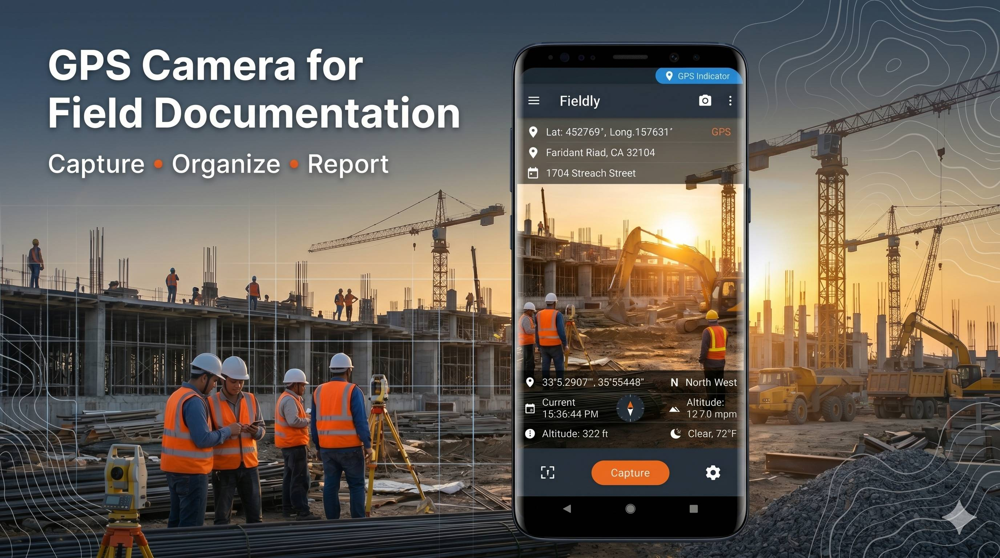

Field Documentation App for GPS-Tagged Photos and Inspection Reports
Fieldly is the ultimate geotag photo app and inspection reporting tool designed for construction field documentation. Capture high-accuracy GPS data and generate professional reports instantly.

Professional Field Documentation Software
Fieldly is more than just a camera; it is a dedicated field documentation app built for professionals who need reliable, structured data from the field. Whether you are conducting a site audit or documenting construction progress, accuracy is paramount.
Our GPS photo camera technology embeds critical metadata directly into your images, ensuring every capture is backed by verifiable location and time data. This makes Fieldly the preferred inspection reporting software for teams worldwide.
Core Features for Field Operations
Everything you need to capture, organize, and export field data in one professional tool.
GPS Photo Capture & Geotagging
Instantly capture high-resolution photos with embedded GPS coordinates, ensuring precise location tracking for every site inspection record.
Timestamp & Location-Based Metadata
Automatically record exact time, altitude, compass direction, and weather conditions to create a comprehensive audit trail for your field work.
Inspection Reporting & PDF Export
Generate professional PDF inspection reports directly from the app. Include photos, metadata, and notes in a structured, client-ready format.
KML Export for Mapping & GIS Tools
Export your site photos as KML files for seamless integration into Google Earth, ArcGIS, and other GIS mapping software.
Custom Field Documentation Templates
Create reusable stamp templates to standardize data entry across projects, ensuring consistency in your site documentation workflow.
Project-Based Photo Organization
Keep your field work organized by project or client. Easily search and filter through thousands of photos using structured metadata.
Built for Every Field Industry
-
01
Construction site documentation app
Track progress and document compliance with daily GPS-tagged site logs.
-
02
Engineering inspection reporting tool
Capture structural details with precise coordinates and compass headings.
-
03
Property condition reporting system
Create detailed audit reports for real estate and insurance assessments.
-
04
Delivery proof with GPS photo records
Verify logistics and deliveries with location-stamped visual evidence.
-
05
Infrastructure audit documentation
Monitor public works and utilities with structured field data collection.
-
06
Travel and field research logging
Document environmental studies or field research with offline GPS support.
Simple 3-Step Field Workflow
Capture photo with GPS metadata
Snap a photo and Fieldly automatically detects your precise location and environmental data.
Embed location, time, and field data
Data is instantly burned into the photo or saved in metadata for tamper-proof records.
Export structured reports
Generate PDF, CSV, or KML files to share with your team or integrate into GIS systems.
Advanced Export & GIS Integration
Move your field data to the tools you use every day.
Export inspection reports as PDF
Beautifully formatted reports with your logo, maps, and high-res photos.
Convert field photos into CSV data
Extract all metadata into spreadsheets for advanced data analysis.
Generate KML files for GIS systems
Map your entire project in Google Earth or professional GIS platforms.
Frequently Asked Questions
What is a field documentation app?
A field documentation app is a mobile tool used by professionals to capture photos, notes, and metadata (like GPS) to record site conditions and project progress.
How do geotagged photos work?
Geotagging embeds geographical identification metadata (latitude, longitude, altitude) into a photo's EXIF data or directly onto the image as a stamp.
Can I export inspection reports from Fieldly?
Yes, Fieldly allows you to generate and export professional PDF, CSV, and KML reports directly from your mobile device.
Is Fieldly suitable for construction site documentation?
Absolutely. It is designed specifically for construction, engineering, and infrastructure projects that require verifiable site evidence.
Does Fieldly support offline GPS photo capture?
Yes, Fieldly captures GPS coordinates using your device's internal sensors, allowing you to work in remote areas without a cellular connection.
"Built for field professionals, engineers, and inspectors. Designed for real-world documentation workflows in construction, logistics, and inspection industries."
Start Using Field Documentation Software Today
The professional GPS photo camera for inspection reporting and field documentation.
Download Fieldly for Android